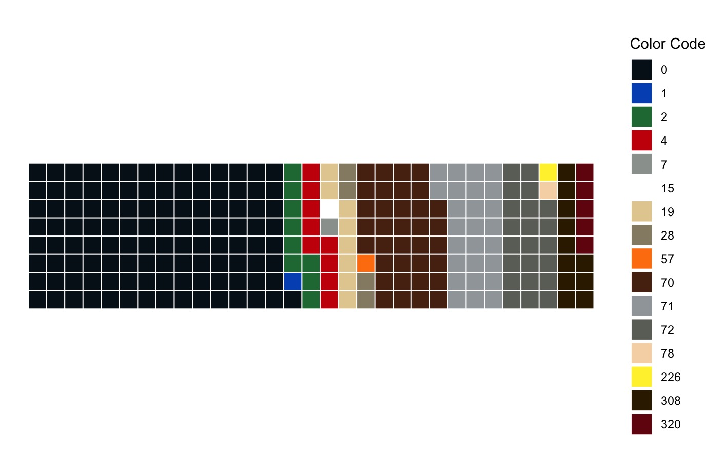
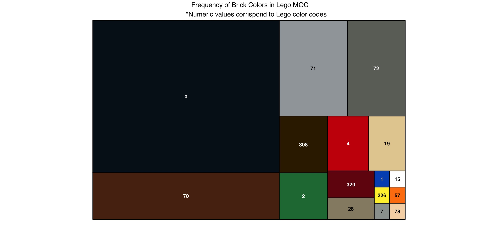
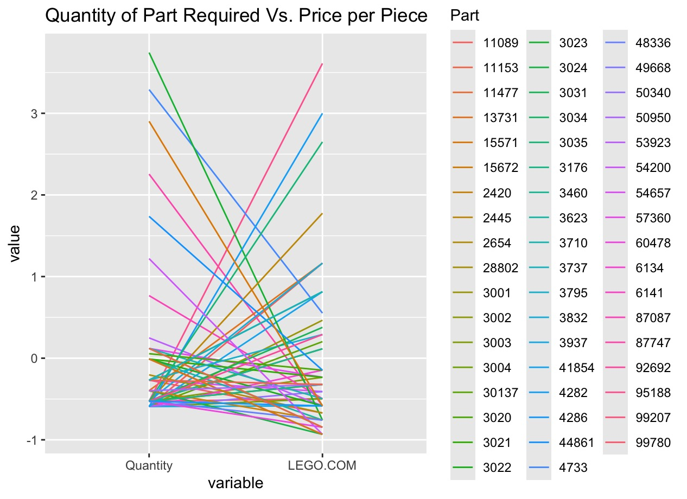
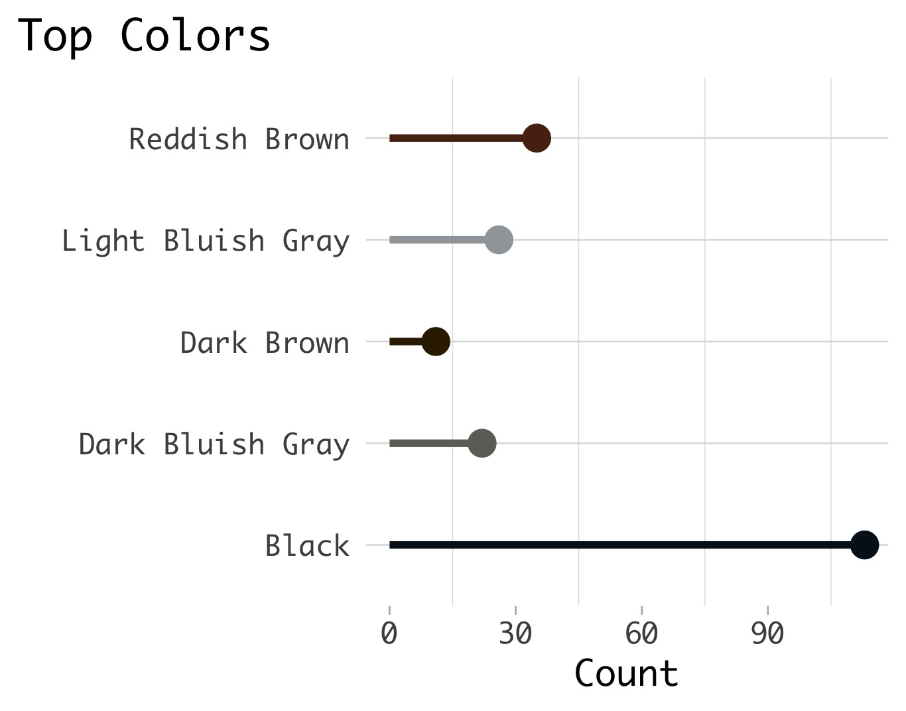

Data is a portion of a parts list for a custom Lego build. Originally designed and data generated on stud.io
‘Part’ -> ID number for that piece
‘Color’ -> Lego color code
‘Quantity’-> number of x piece in x color
‘LEGO.COM’-> Price per piece on lego.com
lego <- read.csv("rebrickable_parts_moc-dragon.csv")
> str(lego)
'data.frame': 248 obs. of 5 variables:
$ Part : chr "11089" "87747" "53451" "30374" ...
$ Color : int 0 0 0 0 0 0 0 0 0 0 ...
$ Quantity: int 1 45 15 1 3 6 2 9 2 1 ...
$ Is.Spare: logi FALSE FALSE FALSE FALSE FALSE FALSE ...
$ LEGO.COM: num 0.29 0.09 NA NA NA 0.08 0.12 NA 0.1 0.1 ...Colors for plots correspond to the published hex codes from Lego.com
tabled_data2 <- as.data.frame(table(Color=lego$Color))
my_cols <- c("#05131D", "#0055BF", "#237841", "#C91A09", "#9BA19D", "#FFFFFF", "#E4CD9E", "#958A73", "#FF800D", "#582A12", "#A0A5A9", "#6C6E68", "#F6D7B3", "#FFF03A", "#352100", "#720E0F")Distribution of colors in the set
waffle <- ggplot(data=tabled_data2,
aes(fill = Color, values = Freq)) +
waffle::geom_waffle(n_rows = 8,
size = 0.33,
colour = "white") +
scale_fill_manual(name = "Color Code",
values = my_cols)+
coord_equal() +
theme_void()
waffle
treemap(dtf=tabled_data2, index="Color", vSize="Freq", type="index", palette= my_cols, title = " Frequency of Brick Colors in Lego MOC *Numeric values corrispond to Lego color codes"
PiecePrice <- GGally::ggparcoord(data=no_na,
columns = c(3,5), # c(3,5,8,9)
groupColumn = 1,
title = "Quantity of Part Required Vs. Price per Piece")
Restructure data and assign colors
# Isolate the top five colors in set
top5 <- tabled_data2 %>%
arrange(desc(Freq)) %>%
slice(1:5)
# Assign names to color codes
color_names <- c(
"0" = "Black",
"70" = "Reddish Brown",
"71" = "Light Bluish Gray",
"72" = "Dark Bluish Gray",
"308" = "Dark Brown"
)
# Replace code with color name
top5 <- top5 %>%
mutate(Color = recode(as.character(Color), !!!color_names))
# Assign correct hex codes (from LEGO.com)
my_cols <- c("#05131D", "#582A12", "#A0A5A9", "#6C6E68", "#352100")Create plot
lolli_colors <- ggplot(data=top5) +
aes(x=Color, y=Freq) +
geom_segment(aes(x=Color,
xend=Color, y=0,
yend=Freq),
color=my_cols,
linewidth=2) +
geom_point( color=my_cols, size=7) +
labs(title="Top Colors",
x="",
y="Count") +
coord_flip() +
theme_light(base_size=20,base_family=
"Monaco") +
theme(
panel.grid.major.x = element_blank(),
panel.border = element_blank(),
axis.ticks.y = element_blank(),
plot.title.position = "plot",
plot.title = element_text(hjust = 0))
lolli_colors